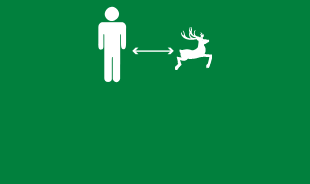
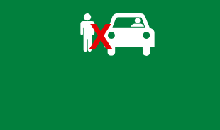
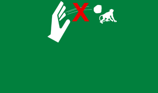
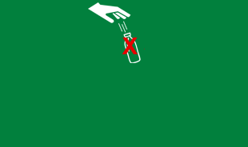
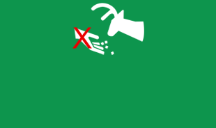

Important Instructions
SGNP is one of the most unique Protected Areas, a real tropical wilderness nestling right amidst massive urban development.
It is hoped you will treat these outdoors with the same respect that you treat your home indoors.
You are fortunate that you can experience this wilderness on foot, a facility not available or allowed in most
National Parks and Wildlife Sanctuaries across India. Have a great experience, both, of the natural world as well as
the specially created informative signages along the paths and paved roads as you explore this wilderness.
Please follow these simple rules while you are here:
Keep a safe distance from animals,
respect their privacy and you will be
rewarded with good sightings.
Be silent…hear the animal’s talking.
Do not get down from the vehicle and
walk at any point of time until the
guide has asked at the designated places
in the forest.
Be sensitive towards your fellow
visitors. Enjoy your visit and let them
enjoy.
Avoid flashing any shiny objects on
animals.
Do not throw objects of any kind
towards the animals.
Avoid using flash of the camera as
it may disturb animals.
Carrying any kind of weapons or
firearms is strictly prohibited.
Do not play music, nature has better
melody to offer here. Listen to it.
Smoking and drinking alcohol is
strictly prohibited.
Carrying and throwing plastic inside
the park is strictly prohibited. It
might kill an animal.
Do not feed animals. They have better
food in nature and can look for their
own.